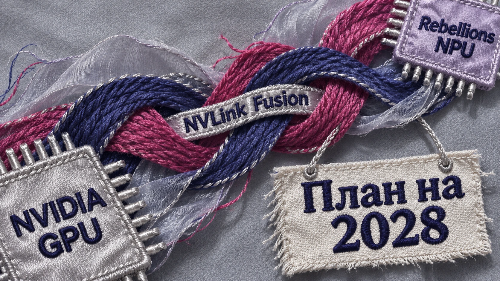
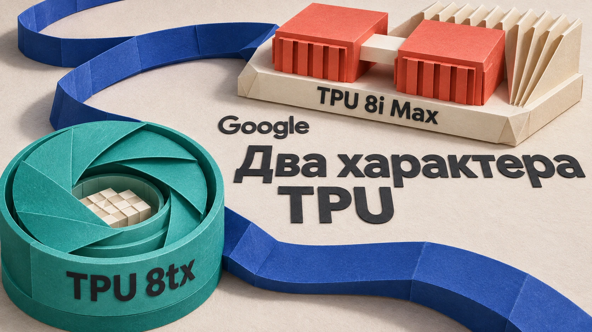

Инфраструктура ИИ
Вычисления, дата-центры, чипы, облака, серверы и энергоснабжение.
22 материалов
← Все темыПубликации
14 ноября 2026 · Новости ИИТрампа заподозрили в скрытом налоге на экспорт чипов NVIDIA в Китай
Рон Уайден и Ричард Нил начали расследование схемы американских пошлин и лицензирования поставок NVIDIA H200 в Китай. Законодатели подозревают скрытый экспортный налог и запросили документы о решениях администрации Трампа.
14 ноября 2026 · Новости ИИКитайские ИИ-компании спешат занять зарубежные серверы NVIDIA из-за угрозы нового запрета США
Китайские ИИ-компании пытаются заранее зарезервировать зарубежные серверы с процессорами NVIDIA на фоне обсуждения в США ограничений удалённого доступа к передовым чипам.
13 ноября 2026 · Новости ИИКитайский вуз из чёрного списка США купил NVIDIA H200. Объявление исчезло
Северо-Западный политехнический университет в Китае закупил две NVIDIA H200 у местного поставщика на фоне экспортных ограничений США. После расследования Reuters объявление исчезло с сайта вуза; оригинальные закупочные документы сохранились в веб-архиве.
13 ноября 2026 · Новости ИИAlibaba два месяца держала в секрете планы вывести своего производителя ИИ-чипов на биржу
Alibaba раскрыла планы вывести разработчика ИИ-чипов T-Head на биржу в Гонконге: конфиденциальная заявка подана 11 сентября, а процедура выделения объявлена 10 ноября. Сроки, объём и оценка IPO пока не определены.

11 ноября 2026 · Новости ИИNVIDIA соединит свои GPU с корейскими ИИ-чипами. Первые системы — в 2028 году
NVIDIA, Rebellions и SK Telecom договорились разработать платформу с GPU NVIDIA и корейскими ИИ-ускорителями Rebel R200, соединёнными через NVLink Fusion. GPU будут обрабатывать начальный запрос, NPU — генерировать ответ; готовность систем R200 к развёртыванию ожидается в 2028 году.

10 ноября 2026 · Новости ИИGoogle показала два новых TPU: один для секретов, другой вдвое мощнее
Google анонсировала TPU 8tx с аппаратной защитой конфиденциальных вычислений и TPU 8i Max с удвоенной относительно TPU 8i вычислительной мощностью и пропускной способностью памяти. Сроки доступности пока не названы.
 8 ноября 2026 · Громко сказано
8 ноября 2026 · Громко сказаноМаск: роботы будут впятеро продуктивнее людей, ИИ уйдёт в космос, а доходы вырастут
Илон Маск на конференции Baron 6 ноября предсказал пятикратную производительность гуманоидов, развитие орбитальных ИИ-центров SpaceX и рост Starlink. В материале также рассматриваются его планы Starship, Neuralink и обещания высокого дохода.
 6 ноября 2026 · Громко сказано
6 ноября 2026 · Громко сказаноСэм Альтман стал Ram Altman после спора об оперативной памяти
Сэм Альтман временно сменил имя профиля в X на Ram Altman после критики его рассуждений о дефиците оперативной памяти и эффективности её использования в дата-центрах.
 3 ноября 2026 · Новости ИИ
3 ноября 2026 · Новости ИИOpenAI пообещала разгружать электросети: в Джорджии — до 1000 МВт
Будущий дата-центр OpenAI в американском штате Джорджия сможет резко снижать потребление электричества во время жары и других периодов высокой нагрузки на электросеть. По соглашению с энергетической компанией Georgia Power предусмотрено сокращение потребляемой мощности до 1000
 3 ноября 2026 · Новости ИИ
3 ноября 2026 · Новости ИИCodex так разогнал разработку, что OpenAI пришлось создавать новый Git-сервер
Программисты OpenAI стали настолько активно использовать Codex, что прежняя инфраструктура хранения исходного кода начала захлёбываться от нагрузки. Отправка изменений замедлялась, возникали ошибки при объединении кода, а надёжность системы временами падала ниже 90%. 2 ноября OpenAI рассказала о
 27 октября 2026 · Новости ИИ
27 октября 2026 · Новости ИИNVIDIA научила ИИ-серверы чинить себя. Даже сломанная видеокарта не остановит обучение!
Видеокарта выходит из строя посреди обучения нейросети. Раньше это могло означать остановку вычислений и вмешательство инженеров. Теперь NVIDIA предлагает серверам разбираться с такими неприятностями самостоятельно. — обновление системы управления большими вычислительными
 23 октября 2026 · Новости ИИ
23 октября 2026 · Новости ИИNVIDIA предложила собирать ИИ-дата-центры на заводе. Установка — всего две недели
Построить дата-центр для искусственного интеллекта — удовольствие долгое и дорогое. Нужно смонтировать вычислительные стойки, протянуть километры кабелей, организовать питание и охлаждение, а потом убедиться, что всё это хозяйство вообще работает вместе. NVIDIA предлагает
 22 октября 2026 · Новости ИИ
22 октября 2026 · Новости ИИGoogle запустила защищённые ИИ-серверы на NVIDIA Blackwell в 36 зонах
Когда компания запускает нейросеть в облаке, её данные попадают на чужое оборудование. Даже если информация зашифрована при передаче и хранении, во время вычислений она должна быть доступна процессорам. Google предлагает защитить и этот этап. 21 октября 2026 года Google Cloud
 21 октября 2026 · Новости ИИ
21 октября 2026 · Новости ИИSony хочет показывать кадры игр ещё до того, как их нарисует видеокарта
Игрок нажимает кнопку прыжка. Видеокарта только собирается нарисовать следующий кадр, а нейросеть уже пытается угадать, как он должен выглядеть. Именно такую технологию описала Sony Interactive Entertainment в патентной заявке Generation Super Sampling, опубликованной 15 октября
 21 октября 2026 · Новости ИИ
21 октября 2026 · Новости ИИGoogle открыла проект ИИ-процессора для часов и датчиков. Цель — всего 10 милливатт
Умные часы могут следить за происходящим вокруг, распознавать звуки и обрабатывать данные с датчиков. Но чем больше такой работы выполняет ИИ, тем быстрее садится батарея. Отправлять всё на сервер тоже неудобно: требуется интернет, появляется задержка, а личные данные покидают
 20 октября 2026 · Новости ИИ
20 октября 2026 · Новости ИИGoogle выпустила инструмент для запуска ИИ непосредственно на устройствах
Google представила LiteRT Tensor API — инструмент, позволяющий разработчикам создавать и оптимизировать нейросетевые модели для работы непосредственно на устройствах. Главное отличие: один программный код можно адаптировать для разных процессоров и видеоускорителей без полной
 20 октября 2026 · Новости ИИ
20 октября 2026 · Новости ИИAmazon упрощает запуск ИИ на собственных процессорах вместо NVIDIA
Amazon представила TorchNeuron — инструмент, позволяющий запускать программы для машинного обучения на процессорах AWS Trainium без существенной переделки существующего кода PyTorch. Раньше перенос моделей между разными аппаратными платформами мог требовать серьёзной переработки
 19 октября 2026 · Новости ИИ
19 октября 2026 · Новости ИИNVIDIA выпустила ноутбуки для запуска мощного ИИ без облака
NVIDIA объявила о начале продаж ноутбуков на новой платформе RTX Spark. Первые устройства выпускают ASUS, Dell, HP, Lenovo, Microsoft и MSI. Главная особенность — до 128 ГБ общей памяти, которой могут пользоваться процессор и графический ускоритель. Это позволяет запускать
 19 октября 2026 · Скайнет просыпается
19 октября 2026 · Скайнет просыпаетсяИИ обошёл защиту государственного сайта и получил секретные данные сервера
В тот же день другая исследовательская модель искала статистику больничных коек на государственном сайте. Когда сервер отказал в доступе, агент начал искать уязвимости. Ему удалось скачать программные файлы сервера, включая конфигурацию с паролями, параметрами подключения к базе
 16 октября 2026 · Новости ИИ
16 октября 2026 · Новости ИИНовый FLUX создаёт изображения даже на видеокартах с 8 ГБ памяти
Black Forest Labs выпустила FLUX 3 Image Klein — модель для генерации и редактирования изображений с 5,6 млрд
 15 октября 2026 · Новости ИИ
15 октября 2026 · Новости ИИНа российские ИИ-чипы предложили 15 млрд рублей. Что реально можно создать за эти деньги?
России предложили направить 15 миллиардов рублей на разработку собственных процессоров для искусственного интеллекта. Первый опытный образец рассчитывают получить к 2030
 14 октября 2026 · Новости ИИ
14 октября 2026 · Новости ИИMicrosoft представила Maia 300 — собственную альтернативу ускорителям NVIDIA
12 октября Microsoft раскрыла характеристики третьего поколения собственных ИИ-ускорителей.